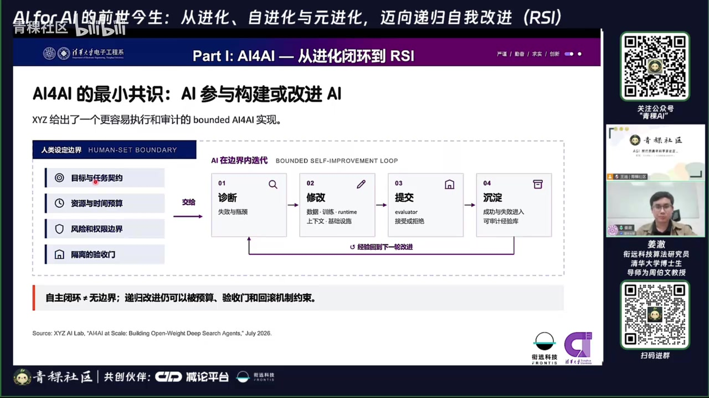
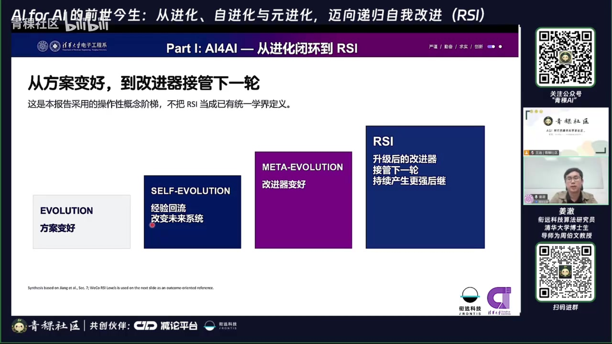
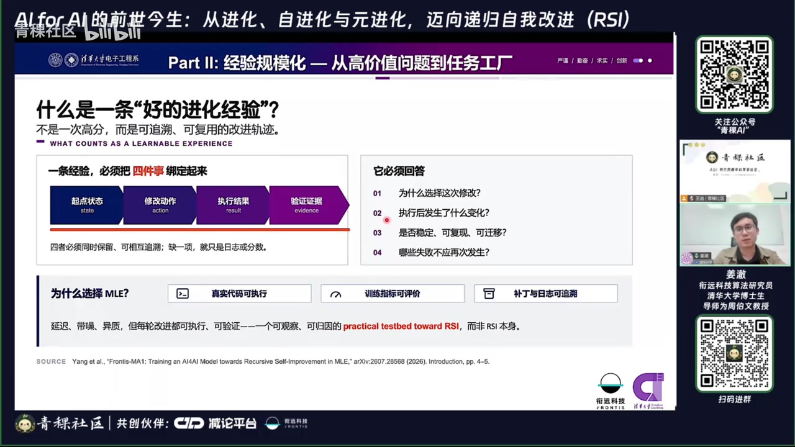
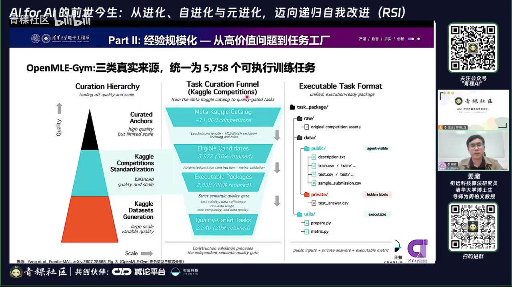
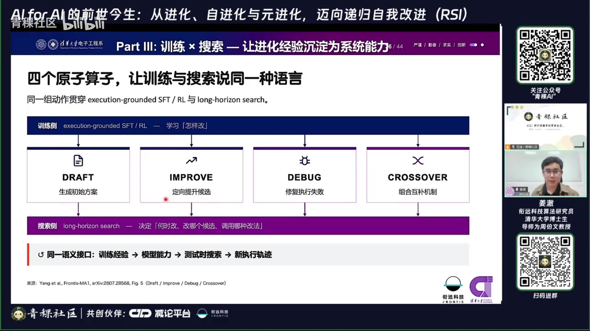
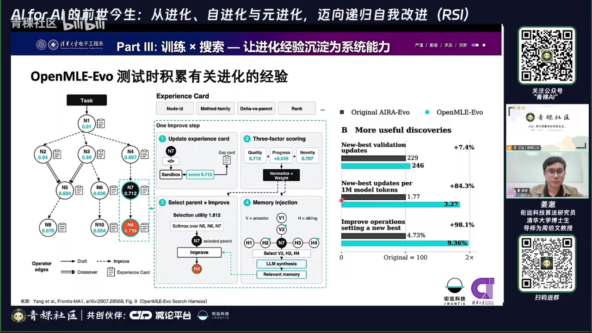
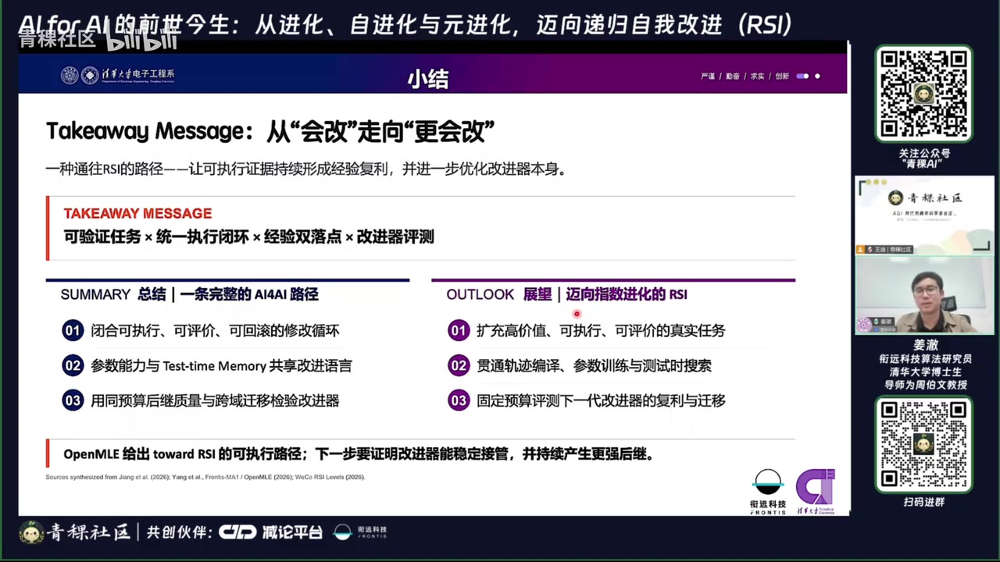

01核心结论
这场报告的核心不是“让 AI 反复试错”，而是把每次改进变成可执行、可评价、可追溯、可复用的经验，再让这些经验反过来改善模型、Agent 及其“改进策略”；只有当升级后的改进器能够接管下一轮并持续产生更强后继时，才真正接近递归自我改进（RSI）。
02核心观点
1. AI4AI 与“进化”不是同一个维度
- AI4AI描述的是任务关系：AI 参与构建或改进另一个 AI 系统；被改进的对象可以是模型、算法、代码、训练基础设施、Agent 工具链或工作流。
- 进化（Evolution）描述的是改进机制：提出修改、真实执行、评价效果、保留更优结果、继续迭代。
- 人类仍负责设定目标、预算、权限、风险和评测边界，AI 在这个边界内闭环搜索。[00:09:32–00:11:54]

2. 进化、自进化、元进化与 RSI 的差别
| 层次 | 改进对象 | 留下什么 | 判定标准 |
|---|---|---|---|
| 进化 | 某个任务的方案 | 更好的 solution | 当前任务表现变好 |
| 自进化 | 未来的自身系统 | 可复用的任务经验 | 换任务或重启后不再完全从零开始 |
| 元进化 | 改进器/改进策略 | “如何改得更好”的经验 | 同等预算下，下一代改进得更快或更好 |
| RSI | 递归接管的改进系统 | 可持续复利的改进能力 | 升级后的改进器接管下一轮并持续产生更强后继 |
演讲者特别强调，自进化的关键不是一次搜索得到高分，而是经验有没有回流并改变未来系统；元进化则再上一层，学习“如何学习、如何改进”。[00:12:05–00:24:40]

3. “循环”不等于“学习”
报告结尾用一个很直观的比喻收束：只循环、不沉淀经验，就像一直刷题但从不做错题本。有效闭环必须把成功与失败的证据留下来，并在以后能够被正确检索、调用或内化。[01:10:26–01:11:04]
4. Agent 的经验有三个落点
- 内容资产：memory、skill、知识条目、可复用操作模板。
- 机制资产：工具选择、工作流、策略、执行结构、经验筛选和淘汰机制。
- 参数资产：通过 SFT、RL 或持续学习，把稳定有效的经验写入模型权重。
前两类适合快速更新、可解释和可回滚；参数内化更慢、更昂贵，但可能形成跨任务的稳定能力。报告主张最终应打通外部记忆与模型参数这两个主要经验落点。[00:13:42–00:17:49；00:54:06–00:54:33]

03内容脉络
第一部分：从 AI4AI 的历史与案例建立概念框架（00:04–00:25）
报告先回顾机器自我改进的历史设想，再列举 AlphaEvolve、Karpathy 的 autoresearch、Darwin Gödel Machine、AIDE 等案例。它们的共同结构是：AI 提出修改，外部环境真实执行，评测器给出反馈，系统筛选并迭代。
讲者随后给出四层阶梯：方案变好 → 经验改变未来系统 → 改进器本身变好 → 改进器递归接管后续改进。报告也明确承认，RSI 尚无统一定义，他们的工作是“迈向 RSI 的路径”，不是已经实现 RSI。
第二部分：把高价值问题变成“经验工厂”（00:25–00:31）
一条有训练价值的改进经验，不能只有最终答案，还应包含：
- 初始状态是什么；
- 做了什么修改；
- 修改后真实执行的结果；
- 为什么变好或变差；
- 哪些经验能够跨任务复用。

为获得这种经验，团队选择机器学习工程（MLE）作为实验场，因为代码能执行、指标能量化、修改和日志能追溯。讲者介绍了两个任务工厂：
- NatureBench / NatureGym：从 5,000 余个候选问题中经多轮自动与人工筛选，形成 90 个源自 Nature 系列论文、覆盖 6 个科学领域的任务；隐藏原论文方法并限制联网，测试 Agent 能否重建或改进科学方案。
- OpenMLE-Gym：从 Kaggle 数据集、竞赛和自动构造任务中统一整理出 5,758 个可执行训练任务。

第三部分：Frontis-MA1 把训练、搜索和经验沉淀接成闭环（00:31–00:46）
系统由三个部分组成：
- OpenMLE-Gym：提供统一、可执行、可评价的任务环境；
- OpenMLE-ERL：把改进经验训练进模型参数；
- OpenMLE-Evo：在测试时用经验卡和树搜索组织长程改进。
训练与搜索都使用四种原子操作：Draft、Improve、Debug、Crossover。这样训练阶段学到的动作可以直接用于测试时搜索，而搜索产生的新轨迹又能反哺训练。[00:33:31–00:35:48]

讲者介绍的训练细节包括：从搜索树中提取高质量解与“父节点失败、子节点修复”的改进对，形成约 2.6 万条 SFT 数据；RL 阶段对不同任务的指标做统一归一化，并通过一种强调组内最佳候选的奖励设计，鼓励模型创造“新最佳”而非只高于平均。
测试时，每个候选节点附带一张经验卡，记录分数、相对父节点的改进、新颖性和操作信息。选择一个节点继续改进时，系统会汇总相关祖先和兄弟节点的经验，避免盲目重复搜索。[00:36:00–00:41:42]

报告方实验声称，这种“训练后的改进模型 + 经验化搜索”在 MLE-Bench Lite 上取得了较好的性能/计算成本折中，并能迁移到 NatureBench。这里应把它理解为对“可学习的改进能力”的初步证据，而不是 RSI 已经发生的证据。[00:41:42–00:44:29]
第四部分：问答中的重要补充（00:47–01:11）
- 当前元进化常以 coding agent 为主要载体，但未来也可能延伸到硬件和物理系统。[00:47:56–00:48:44]
- 经验库会膨胀、冲突、检索出错；讲者认为元进化应学习经验的筛选、更新和淘汰机制，而不永远依赖人工规则。[00:50:34–00:51:31]
- 只有搜索树而没有经验沉淀，通常只能算进化；若保存父子节点之间“改了什么、为何有效”的可复用信息，才开始具有元进化意味。[00:54:47–00:55:59]
- 学术团队算力有限时，可先选垂直、高价值、可验证的任务，逐步扩展分布，而不是直接与大厂比拼通用模型规模。[00:52:24–00:53:54；01:09:14–01:10:20]
- 主观任务上的评价与人类偏好仍难对齐；跨任务 rubric 只能缓解，不能根治。[01:06:22–01:07:25]
04论证结构
幻灯片不是装饰，而是把报告的逻辑压缩成三张关键图：
- 概念阶梯：从方案变好，到经验回流，再到改进器变强和递归接管；
- 经验证据链：起点—修改—执行—验证，缺一就难以训练“如何改进”；
- 统一闭环：任务环境产生真实反馈，参数训练和测试时搜索共享动作语言，外部记忆与模型权重共同承接经验。

05关键事实、综合分析与实践边界
- 视频约 71 分 34 秒；主讲约 47 分钟，问答约 24 分钟。
- 报告围绕三项工作展开：自进化/元进化综述、NatureBench、Frontis-MA1。
- 报告方称 NatureBench 最终包含 90 个任务，来自 5,000 余个候选，覆盖 6 个科学领域。
- 报告方称 OpenMLE-Gym 包含 5,758 个统一格式的可执行训练任务。
- SFT 阶段使用了约 2.6 万条数据，既含高质量解，也含有执行证据的修复/改进样本。
- OpenMLE-Evo 不只记录节点得分，还记录改进幅度、新颖性、谱系关系和经验摘要。
- 演讲者将 RSI 的关键理解为“投入的智能/算力小于后续产生或节约的智能/算力”，即形成净正向复利；这是一种解释框架，并非公认标准定义。[01:07:38–01:08:14]
综合分析
这场报告最有价值的地方，是把非常宏大的“AI 自我改进”拆成了可以工程化讨论的四个问题：改什么、怎么验证、经验存哪里、谁来改进改进器。它也纠正了一个常见误解：搜索次数更多、推理时间更长或分数更高，不等于系统真正学会了自我改进。
从技术成熟度看，这套工作更准确的定位是“有记忆、有训练、有验证的自动化算法改进系统”。它展示了元进化的一些必要部件，但距离强 RSI 仍有明显鸿沟：
- 评价器瓶颈：系统会不会只是学会迎合 benchmark 或 reward，而非真正变聪明？
- 经验治理瓶颈：经验增多后会出现过时、冲突、错误检索与上下文膨胀。
- 泛化瓶颈：在 MLE 和部分科学任务上有效，不代表能跨开放世界任务稳定迁移。
- 成本核算瓶颈：测试时搜索往往用更多 token 和计算换成绩；若节约的成本小于改进成本，就谈不上递归复利。
- 递归接管尚未证明：真正 RSI 需要第 N 代改进器可靠地产生更强的第 N+1 代，并反复成立，而非单轮系统优化。
因此，报告的结论应理解为：团队提供了一条通往 RSI 的可执行研究路线和实验平台，而不是宣告 RSI 已经实现。
可执行启示
如果把这套思路用于实际 Agent 或自动化工作流，可以从小闭环开始：
- 选择结果可以真实执行和量化评价的任务；
- 保存“改前—改动—执行—结果—原因”，不要只保存最终答案；
- 把短期经验放入 memory/skill，把跨任务稳定规律再用于训练或规则升级；
- 同时评估任务得分、改进速度、计算成本、跨任务泛化和 reward hacking；
- 定期淘汰过时经验、合并重复经验、保留失败证据；
- 只有当改进后的系统在相同预算下持续比上一代更会改，才考虑把它称为元进化。
研究边界
- 概念进阶不等于能力已实现。从进化、自进化到元进化与 RSI 是判别框架；现有系统尚未普遍证明能够持续升级改进器并形成递归复利。
- 实验数字应结合设定阅读。任务规模、对比模型与性能结果来自讲者和项目材料，不能脱离预算、数据与评测条件直接横向比较。
- 近期项目变化较快。模型版本、开源状态与基准结果应以论文、代码仓库和项目主页的最新信息为准。